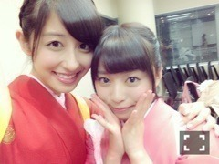
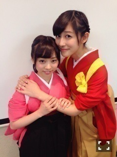
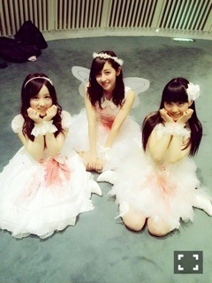
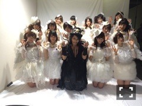
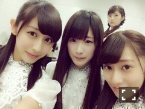

| 2014/10 21 Tue | 最近のできごと。長 文。ねねらぶ(´>∀< ｀)ゝ |
ちはるーむへようこそ٩( ᐛ )و
9thの握手会、ラスト！！
本当にありがとうございました！！！
来てくれて、本当嬉しかった♡
そしてすごく楽しかった♡
なにせハロウィン近いってことで
こんな格好してたからね♡
ばーーーーーん
インドの民族衣装、サリーです。
多分、何も知らない人、この写真とブログみたらびっくりするんじゃないかな。
斎藤ちはるさんじゃなくて
現地の方の写真でも見てるのかって。
そう思うよね。
多分ね、多分だけど、
こんなにサリーが様になってしまう日本のアイドルって私1人だと思うの。
うん。自負しちゃうレベル。
このサリーはね、
お母さんが結婚式のお色直しで着たやつ！
ざっと20年ほど前の服なの！
お母さんの、お父さん(つまりおじいちゃん)がインドに赴任してたから
サリー着ることになったらしい！
ちゃんと理由があるのよ。
(お母さんが現地の人とかそーゆーのじゃないのよ。)
そういえば、初めてきたのにサリー姿でびっくりした方は、是非とも普段の私服の私に会いに来てくださいな♡
そして、握手会といえば！恒例になりました！
生誕祭！
あみたむ！おめでとう！
サリー姿で、お手紙読ませていただきました。チームD勢ぞろいしました。
セーラームーンに、アリスに、メイドに、サリーに、なんの集まりよっ！٩( ᐛ )و
あみたむ、いつもふざけあってるけど
ぶれない所とか、
包容力とか、
面白いとことか、
いつも笑ってるところとか、
いつもちーちゃんらぶ！って言ってくれるところとか、
本当大好きです。
もっと真剣なお話はお手紙として読ませていただいたので秘密ね♡笑
(ただ文にするのが恥ずかしいだけ←)
これからもチームDとしても、
やまびことしても、
楽しい日々を過ごしましょう！！
素敵なハタチになってねﾟﾟ\(´O`/)°゜ﾟ♡
そしてそして、斎藤ちはるの2人！

りさこ♡きょーちゃん♡
卒業おめでとう。
あんまりいっぱい話したりは出来なかったけど、遠くの方から可愛いなってみてたよ\( ˆoˆ )/
寂しいけど、2人とも、この経験を活かして、頑張ってください！！
もっとお話ししたかった(> <)
そしてそしてそして、
ねねﾟﾟ\(´O`/)°゜ﾟ

私は、寧々が大好きで大好きでしょーがなくて、ねねころ部で、年上なのにいつもよしよししてました。
ちっちゃくてかわいいのに
性格はクールだし
考え方が凄い大人だし
しっかりしてるし
大人びてるし
ほんと寧々という「人」に惹かれました。
寧々がすごく大好きだから
卒業って本当寂しいし、
正直アンダーライブにも駆け付けたかったし
ただのファンなんだけど、
これからもずっと応援し続けたい。
寧々にメール送ったら
暇なときにあみとかと一緒にディズニー案内してー♡
って言って来てくれて
ああ、天使。
と思いましたﾟﾟ\(´O`/)°゜ﾟ
卒業しても仲良くしてくれるってことだよね、嬉しいよﾟﾟ\(´O`/)°゜ﾟ♡
とにかく寧々の存在に助けられたことが多々あります。
だからいないっていうのが寂しくてしょうがないけど。。
寧々の背中おします。
斎藤家も、寧々が大好きだから
ぜひうちに遊びに来てね！
最高のおもてなしするよ！
すみません。話がまとまらないけど。
寧々、卒業おめでとう。
大好き！！！！

VAMPSさん主宰のフェス
HALLOWEEN PARTY 2014にも参加させていただきました！！
ほんとに、一生の思い出ってくらい
すごく楽しかった！！♡(﹡ˆ ˆ﹡)
衣装は、
天使♡
と思いきや
よく見たら血だらけ！！
ライブ中にゾンビにマシンガンで撃たれて血だらけになりました〜〜えへ

みなみおなと、ちはる。
ひとりひとり違う衣装なんだ〜！♡
嬉しい。。

HYDEさん、ありがとうございました♡
ミュージックステーションさんに、出演させていただきました！
本当に素敵な場所で歌わせていただいて
しあわせでした！！
一生もんの思い出。
友達から、見たよー♡ってすぐ連絡がきて
やっぱりゴールデンの素晴らしさには度肝を抜かれました。素敵。
そしてファンの方も永久保存してくださるみたいで優しいです。♡
でもなぜか緊張せず、すごく楽しめたので良かったな(﹡ˆ ˆ﹡)
そして週末にはミュージックフェアも放送されるのでよかったらみてね！！
あと、お台場のハロウィンイベントにも参加します！！
レギュラー以外のテレビ出演って、かなり嬉しいﾟﾟ\(´O`/)°゜ﾟ♡
みてほしいﾟﾟ\(´O`/)°゜ﾟ♡
実は、明日から学校の中間テストが始まるので
申し訳ないけど怒涛の質問返しはお休みしますヽ(；；)丿
ごめんなさいヽ(；；)丿
しかも文も多いしヽ(；；)丿
読んでくれてありがたいですありがとうヽ(；；)丿

この若月すき。
ばいるんっ
るんるんっ
ちはるんっ
(´>∀<｀)ゝ
コメント(224)
2014/10/21 23:30